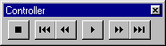
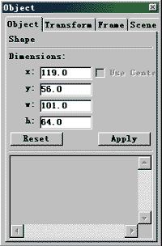
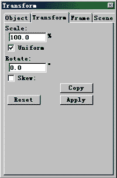
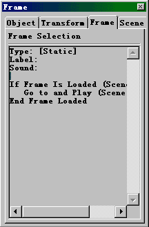
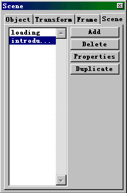

第四节 菜单详解 (6)
作 者 : Kooler
今天是菜单介绍的最后一讲。
（ 6 ） CONTROL 菜单 CONTROL 菜单是针对当前场景及 MOVIE 预览及测试而设置的，使用其中的命令可以随时观看和测试
MOVIE 及 SENCE 的效果，以便随时修改编辑当前 MOVIE 和 SENCE ，使之效果与你要求相同。
Play ：播放当前场景。
Step Forward 和 Step Backward ：或者从控制菜单中选择这些命令都可以令动画前进或后退，你还可以按住键盘上的
< 和 > 键，作用都是一样的。
以上两个功能也可以使用菜单 WINDOW->CONTROLLER 上的按键实现。

Test Movie 和 Test Scene 命令：测试当前 MOVIE 和场景的全部动画和互动控制，这两个命令可以创建
Flash Player 影像，会在一个单独窗口中播放。
- Loop Playback ：连续循环播放影像。
- Play All Scenes ：播放影像中所有的场景：
- Mute Sounds ：播放影像时不播放声音：
- Enable Frame Actions ：允许帧 actions 生效：
- Enable Buttons ：允许按钮 actions 生效：
（ 7 ） LIBRARY 菜单 LIBRARY 在前面已经介绍过，这里就不多讲了。：）
（ 8 ） WINDOW 菜单
再这个菜单中有个很有用的窗口 -INSPECTOR （监控器），监控器可以帮助你查看、组织和改变影像中的元素。下面我们就着重介绍其使用方法和功能。

如果你的 INSPECTOR 的显示各项是分离的，只要拖拽监控器标签到同一窗口，即可重组监控器与上图一致。
在 INSPECTOR 面板上的各部分的详细说明如下：
1 ） OBJECT ：该窗口显示的是当前选定对象的长（ W ）和宽（ H ），以及相对于坐标原点（舞台的左上角）的位置（以
X 和 Y 表示），并允许通过输入数字来精确安排舞台上的对象。

2 ） TRANSFORM ：在该面板中可以对当前选定对象的进行比例缩放及角度旋转的操作。

3 ） FRAME ：该面板显示当前选定帧的有关信息。如帧的类型、所标记的 LABEL 及 ACTION 等内容。

4 ） SCENE ：在这个面板中可以很简单地对场景进行增加、删除、改名及调整顺序的操作，对于大型多场景的 MOVIE
来说，这里是管理 SCENE 好地方。
（ 9 ） HELP 菜单
这个菜单在每个 WINDOWS 应用程序里面都会有，是为了让你熟悉软件的使用方法、功能及技巧而设置的。你在使用 FLASH
过程中有任何疑问都可以通过 HELP 菜单进行查询，不过 FLASH4 的 HELP 文件是洋文的（真是美中不足，不过它很全的哦，是个不错的教材）。
在 HELP 菜单中有如下选项：
FLASH HELP TOPICS ：
进入这个选项后，你可以根据你所要查的问题点在 HELP 文件里进行查找，在这里共有三种查找方法：按主题（ CONTENT
）、按字母顺序（ INDEX ）和按要求的文字查找（ SEARCH ）。
（注：在使用 SEARCH 查找多个单词时，在单词之间要加个“ + ”号，比如你要查找有关 KEYFRAME 和 ACTION
的有关信息，则在 SEARCH 栏内输入“ KEYFRAME + ACTION ”即可。）
REGISTER FLASH ：
呵呵，到 FLASH 的老家去注册。
Flash Developers Center ：
这个选项也把你带到 FLASH 的老家，不过这个选项比上面的 REGISTER FLASH 好得多了，这个选项所连的网站定期更新有关
Flash 的最新消息的，还包括有来自专业人士的建议，高级主题，范例，提示，和更新。经常访问该网站可以让你随时掌握 FLASH
的最新动态。
LESSONS ：
这里有 FLASH4 自带的基础教程，全是使用 FLASH 制作的，教程对 FLASH4 中的基本元素及操作进行了大概的介绍，界面直接，容易理解。
SAMPLES ：
在这里面有许多 FLASH4 提供的实例源文件，展示了 FLASH4 的各项功能，你可以对这些文件进行研究，也可以进行修改，：）变成你自己的作品；呵呵，多练习研究，你这个菜鸟也差不多可以升级了。
菜单已经基本上讲完了，下节课讲实例。
菜鸟们，呵呵，下课回去要多多练习，这样才能够提高啊！看电视多注意一下里面的效果，可能里面一些效果你用 FLASH 就可以做出来了。：）